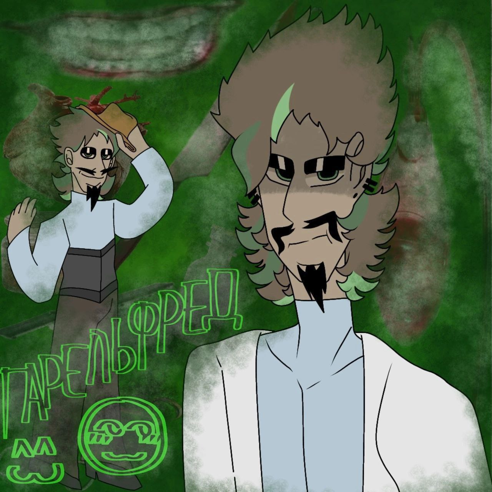

Биография
Действия происходили в 1950-1960 гг, когда родилась девочка - Евгения. Её мама, 30 летняя хозяйка завода по изготовлению обуви с помощью настоящей кожи зверей, и взрослый, 90-летний отец, который ы каком-то смысле был рад её рождению.
Евгения немного была одарена математикой, и её сильно притягивала медицина, когда она приходила в различные больницы, чтобы ей прописали какой-нибудь диагноз, когда она чем-нибудь да болела. На протяжении нескольких лет, до её 8-летия, она была окружена различными репетиторами, заботой некоторых взрослых людей (например: секретарь матери Евгении), но родителям было практически наплевать на своего ребёнка - Женю.
Годы всё также шли, отличница отличницей, а родители девушки стали меняться в совершенно другую сторону. …
Гарельфред, выбравшись из пучины проблем и переживаний, смог быстро понять, что те оставшиеся деньги, которые он забрал, потеряны. …
Мужчина уехал, оставив всё позади, сменив документы, поменяв чуть-чуть внешность. …
Характеристика
Гарельфред - сложный персонаж с многими гранями, который прошёл через множество трудностей и трансформаций. Имеет садистские и нарциссические наклонности, что проявляется в его отношении к другим людям.
Способен на любовь, но также и на жестокость, что делает его личность многослойной и интересной для изучения.
Цитаты
"Я не боюсь смерти, я боюсь бессмысленности." - Гарельфред
"Деньги – это лишь временный комфорт, я ищу нечто большее." - Гарельфред
